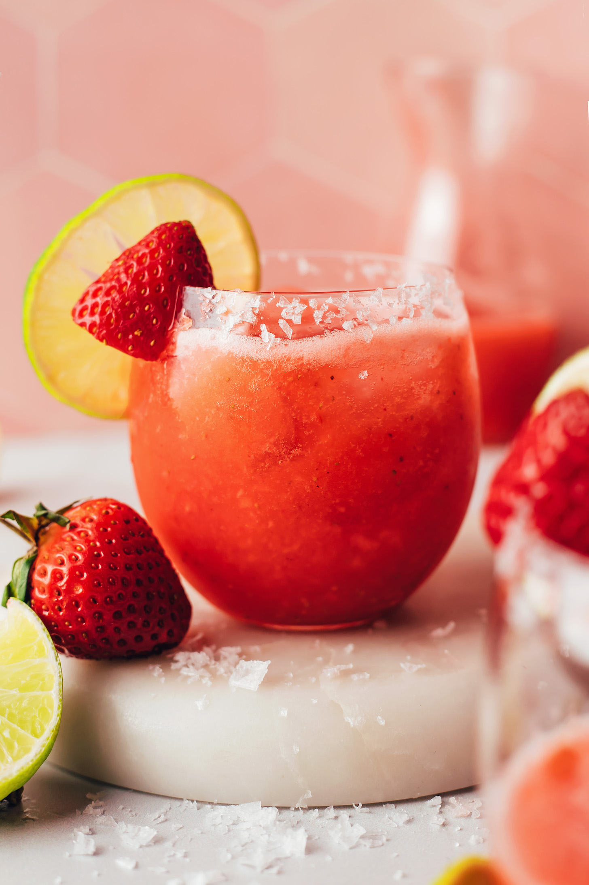

Fresh Strawberry Margarita (5 Minutes!)

Fresh Strawberry Margarita Recipe
EASY, naturally sweetened strawberry margarita bursting with fresh
strawberry flavor and the perfect tart-sweet balance! A refreshing drink
ready in just 5 minutes with 4 ingredients and a blender!
Ingredients
- 1 cup fresh strawberries, stems removed and halved
- 2 Tbsp maple syrup
- 1/4 cup tequila (1/4 cup equals 2 ounces)
- 1/2 cup ice
- 1/4 cup lime juice
Instructions
-
To a high-speed blender, add your sliced strawberries, maple syrup,
tequila, ice, and lime juice. Blend on high until smooth. Serve over ice
or straight up!
-
Can be made up to 1 day ahead and stored in the refrigerator. Or, freeze
into ice cubes and blend with a small amount of extra water.